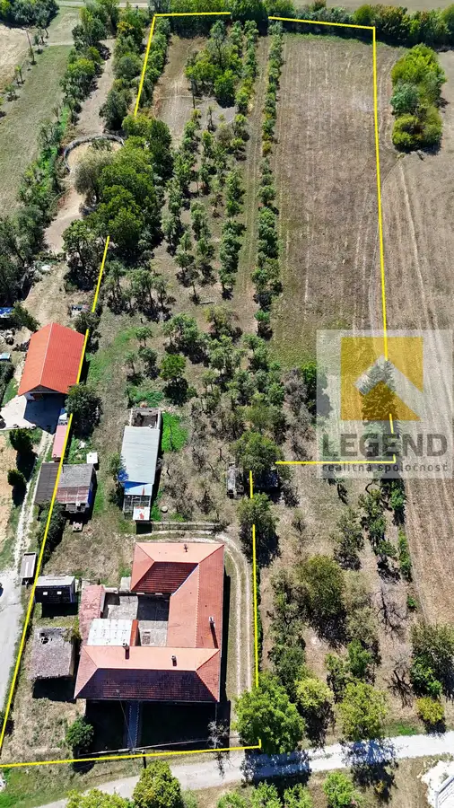
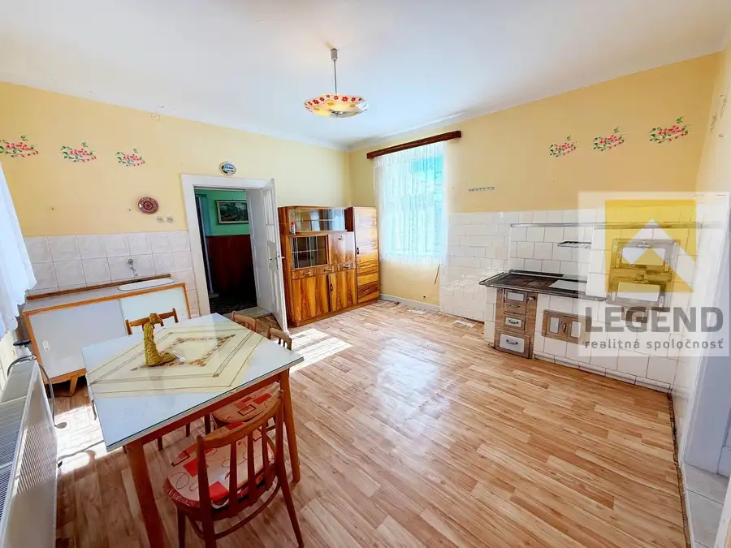
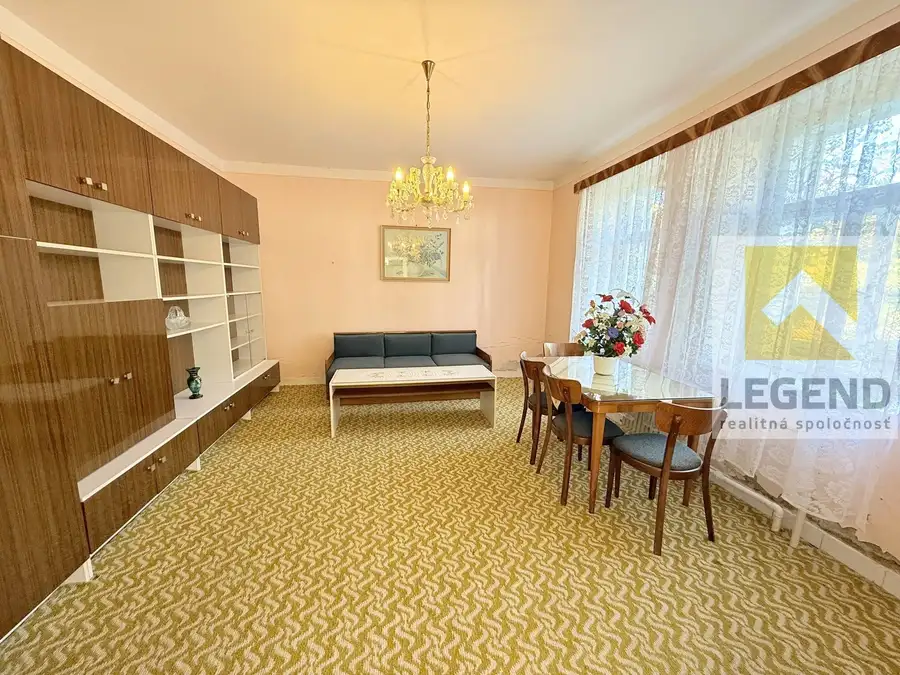
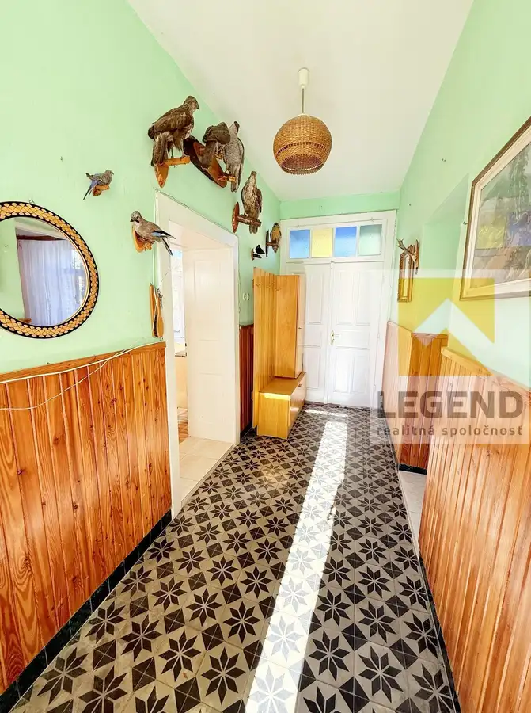
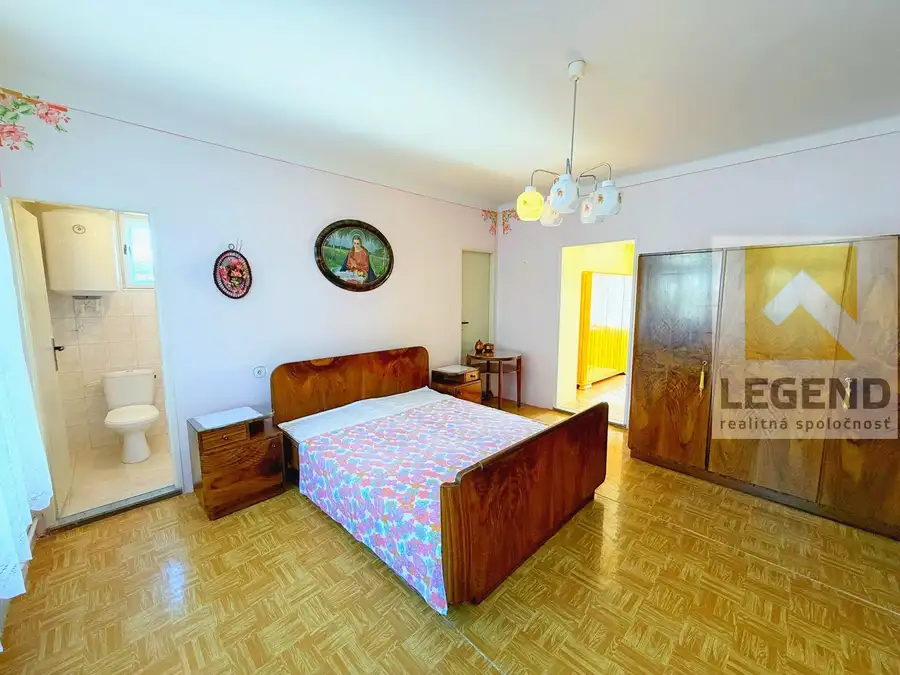
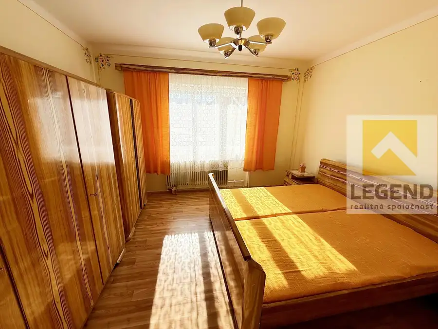
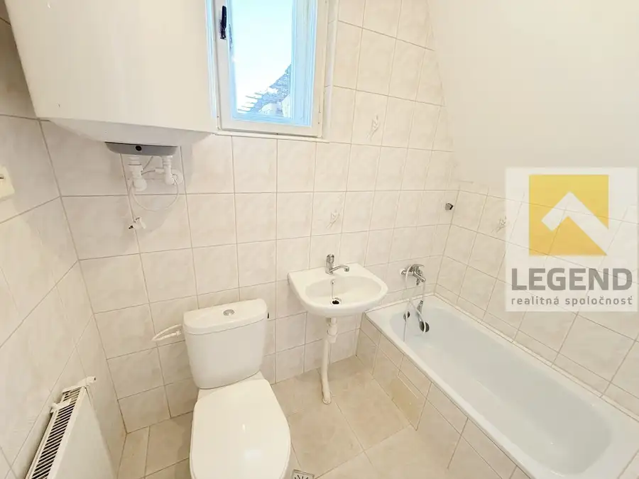

LEGEND - !!! Znížená cena !!! - Jedinečná chalupa 8i+2 na kopaniciach vo Vrzavke - 14.202m2, hosp. budovy, 3x garáž, IS
Bzince pod Javorinou








- Plocha550 m²
- StavPôvodný stav
- VlastníctvoOsobné
O nehnuteľnosti
*** Veľký slnečný pozemok 14.202 m2 – Dvojgeneračný dom – Hospodárske budovy ****** Ponúkame na predaj očarujúcu nehnuteľnosť s veľkým areálom na polosamote v krásnej prírode pod Javorinských kopaníc. ****** 3D sken si môžete prezrieť tu - https://my.matterport.com/show?m=gXbvjQaiCPX ***Viac foto nájdete na legend.skUsadlosť sa nachádza vo Vrzavke – miestnej časti Bziniec pod Javorinou, 11 km od centra Nového Mesta nad Váhom, 11,5 km od diaľničného privádzača, 115 km od Bratislavy.Pozemok čiastočne oplotený, pozostávajúci z krásneho starého rodinného domu budovaného v dvoch samostatných častiach, hospodárskou časťou s viacerými budovami a priestrannými parcelami s krásnymi výhľadmi na Veľkú Javorinu a Jelenec.V dome 6i+2(+3) sa nachádzajú – elektrina 230/400V, voda obecná aj zo studne, kúrenie s kotlom na tuhé palivo ( cca. 13 ročný).-Prvá staršia časť domu bola vybudovaná z nepálenej tehly v 40.tych rokoch minulého storočia a nesie krásne pôvodné architektonické prvky.K pôvodnej výstavbe 1+1 ( + 3x miestnosť v podkroví) boli rekonštrukciou podnávratia v 70-tych rokoch vybudované z pálenej tehly ďalšie dve spálne ( jedna podpivničená kotolňou) + kúpeľňa s WC bola vybudovaná v 90-tych rokoch. *Zaujímavosťou je, že novšia aj staršia časť domu má samostatný vstup z ulice aj z nádvoria. Taktiež vstup do podkrovia je možný z novšej časti domu ( s možnosťou prepojenia) ale má tiež samostatný vstup z nádvoria.- Druhá časť 2i+1 bola postavená v 60-tych rokoch z pálenej tehly – vstup do izieb je riešený z uzavretej presklenej chodby, vstup do kuchyne, kúpeľne s WC a podpivničenej dielne. V pivnici sa nachádza aj pôvodná studňa.-Na pozemku sa nachádzajú viaceré hospodárske budovy z pálenej i nepálenej tehly ( väčšina vo veľmi dobrom stave) – 2x samostatná garáž s plechovou bránou, veľká garáž + dielňa s novou plechovou strechou, 2x miestnosť na chov zvierat, murovaná dreváreň vedľa domu a skleník.- Pozemky s využitím rôznych typov – 1.485 m2 zastavané plochy a nádvoria, 2.064 m2 záhrady, 4.200 m2 ovocné sady, 6.453 m2 orná pôda – celková výmera – 14.202 m2.-Areál je situovaný v prekrásnom prostredí v blízkosti lesov, s nádhernými výhľadmi na široké okolie. Okolité zmiešané lesy sú vhodné na celoročnú turistiku, cykloturistiku, zber húb, lesných plodov (malín, lesných jahôd, drienok, černíc...). Neďaleko sa nachádza viacero turisticky zaujímavých miest – Veľká Javorina, Mini Farma Lubina.Možnosti využitia areálu sú široké – ideálny pre ľudí so záujmom bývania v krásnom tichom prostredí na polosamote s ľahkou dostupnosťou občianskej vybavenosti/ do mesta, objekt spojený s chovom zvierat, podnikanie s bio- chovom.-V neďalekej dedine Bzince pod Javorinou sa nachádza kompletná občianska vybavenosť –materská + základná škola, obchody, známa pekáreň, zdravotné stredisko, lekáreň.Možnosť financovania aj cez Hypotekárny Úver.DOHODA NA CENE MOŽNÁ.KONTAKT: Pavlína Talianová Tel. 0917/633 285MAIL: talianova@legend.skTúto nehnuteľnosť exkluzívne predáva LEGEND realitná spoločnosť s.r.o., pobočka Nové Mesto nad Váhom, Námestie Slobody 9A (NATALI centrum) Tel. 032/7434159Chcete profesionálne predať svoj byt / dom / pozemok? Nestrácajte čas a kontaktujte nás!VOLAJTE NA ČÍSLO: 0917/633 285
Parametre
- Druh
- Chalupa, rekreačný domček
- Dátum zverejnenia
- 21. 08. 2026
- Energetický certifikát budovy
- nie je
- Plocha pozemku
- 14202 m²
- Počet garáží
- 3
- Počet nadzemných podlaží
- 1
- Počet pivníc
- 2
- Stav nehnuteľnosti
- Pôvodný stav
- Terén pozemku
- Mierne svahovitý
- Typ
- Predaj
- Typ konštrukcie
- Tehlová
- Vlastníctvo
- Osobné
- Vybavenie
- Pivnica, Garáž
- Vykurovanie
- Ústredné, Krb
- Zastavaná plocha
- 550 m²
- Úžitková plocha
- 550 m²
Kde to je


Mohlo by Vás zaujímať
 PozemokNové
59 000 €LEGEND - Krásný pozemok v Lubine - vedľa Minifarmy, 1.784 m2, IS dostupné
Lubina
1784 m²
PozemokNové
59 000 €LEGEND - Krásný pozemok v Lubine - vedľa Minifarmy, 1.784 m2, IS dostupné
Lubina
1784 m²
 DomNové
79 990 €LEGEND - Gazdovský dom 4i + 1 v Lubine - blízko Minifarmy, 2x dieľňa, veľký pozemok 869m2
Lubina
300 m²
DomNové
79 990 €LEGEND - Gazdovský dom 4i + 1 v Lubine - blízko Minifarmy, 2x dieľňa, veľký pozemok 869m2
Lubina
300 m²
 DomNové
279 990 €LEGEND - Smart Novostavba 4i+1 v Rakoľuboch - 351m2, garáž, zariadenie, energ. cert. A0
Kočovce
452 m²
DomNové
279 990 €LEGEND - Smart Novostavba 4i+1 v Rakoľuboch - 351m2, garáž, zariadenie, energ. cert. A0
Kočovce
452 m²